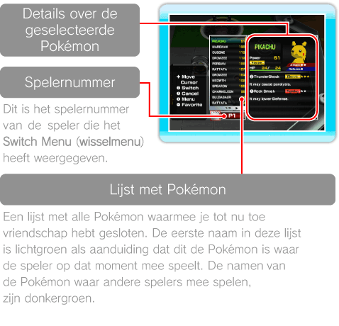
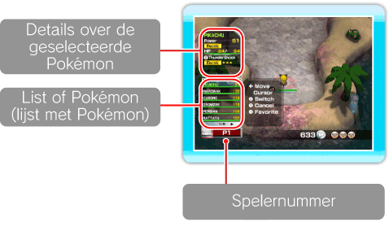
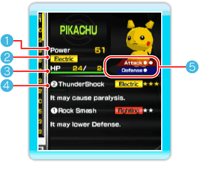
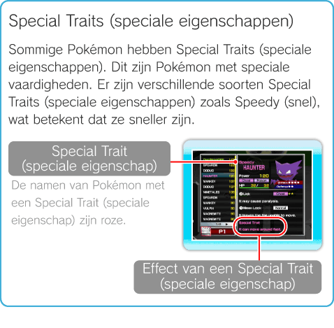
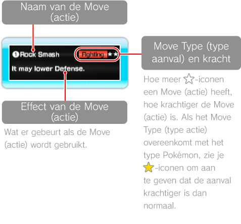
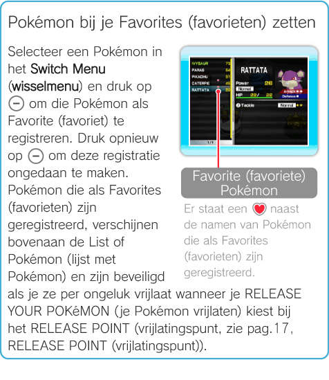

11 |
Switch Menu (wisselmenu) |
 |
|
Het Switch Menu (wisselmenu) weergeven Druk op Voor informatie over het wisselen van Pokémon in de Terminal (zie pag. 12, Pokémon wisselen), Stages (levels, zie pag. 13, Pokémon omruilen) en de Battle Royale (zie pag. 14, Pokémon wisselen), lees je de pagina’s voor de verschillende onderdelen. Wanneer het aantal Pokémon dat is opgeslagen in het Wii-systeem 1001 heeft bereikt, pas je de lijst met Pokémon aan door je Pokémon vrij te laten bij het RELEASE POINT (zie pag. 17, RELEASE POINT (vrijlatingspunt)).
Weergave in de Terminal  Weergave in de Stages (levels) en in de Battle Royale  Weergave van details over Pokémon  Opmerking: deze versie van het scherm verschijnt in de Terminal.
Power (kracht) Hier staat de Power (kracht) van de Pokémon.
Pokémon Type Hier staat het type Pokémon, bijvoorbeeld Er zijn verschillende Pokémon-types. Sommige Pokémon behoren zelfs tot twee verschillende types.
HP (energiepunten) Hier wordt de huidige HP/maximale HP van de Pokémon weergegeven. De HP gaat elke keer dat de Pokémon door een aanval gewond raakt omlaag. Als de HP 0 is, valt de Pokémon flauw. Opmerking: als je terugkeert naar de Terminal,zijn al je Pokémon automatisch weer in orde.
 Move Information (acties) Hier staat informatie over de Moves (acties) die deze Pokémon kent. Pokémon kunnen maar twee Moves (acties) leren. De Moves (acties) worden toegewezen aan de knoppen die links van de naam van de Move (actie) staan ( Sommige Pokémon hebben maar één Move (actie). Als je op de knop drukt waar geen Move (actie) aan is toegewezen, draait de Pokémon zich om. In dit spel stijgen de Pokémon niet in niveau en leren ze ook zelf geen nieuwe Moves (acties). Als je je Pokémon een nieuwe Move (actie) wilt leren, gebruik je de faciliteit TRAINING POINT (trainingspunt) in de Terminal (zie pag. 12, Faciliteiten gebruiken).
 Attack/Defense (aanval/verdediging) Hier staan de scores voor Attack/Defense (aanval/verdediging) van de Pokémon. Hoe meer ○ iconen je ziet, hoe hoger de scores voor Attack/Defense (aanval/verdediging). Opmerking: niet weergegeven in de Stages (levels) en in de Battle Royale.
Pokémon zoeken/sorteren Als je op Opmerking: deze opties zijn niet beschikbaar in het Switch Menu (wisselmenu) als je je in de Stages (levels) of Battle Royale bevindt.
 |
 om naar het Switch Menu (wisselmenu) te gaan waar je Pokémon kunt selecteren om te wisselen en hun statistieken en Power (kracht) kunt bekijken. In het Switch Menu (wisselmenu) staat steeds andere informatie, afhankelijk van de plaats waar het menu wordt weergegeven.
om naar het Switch Menu (wisselmenu) te gaan waar je Pokémon kunt selecteren om te wisselen en hun statistieken en Power (kracht) kunt bekijken. In het Switch Menu (wisselmenu) staat steeds andere informatie, afhankelijk van de plaats waar het menu wordt weergegeven.
 (elektrisch).
(elektrisch).
 en
en  ).
).
 drukt in het Switch Menu (wisselmenu) in de Terminal, verschijnen de volgende drie menuopties.
drukt in het Switch Menu (wisselmenu) in de Terminal, verschijnen de volgende drie menuopties.
 |
 |
 |